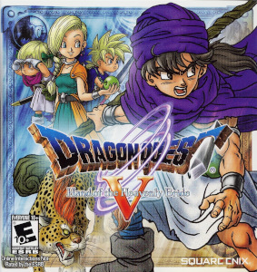
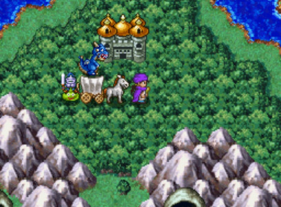
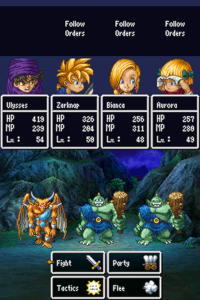
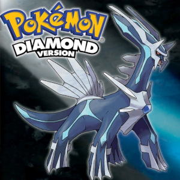
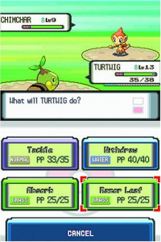
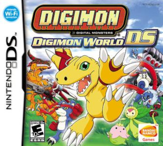
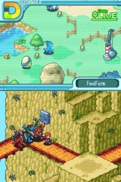
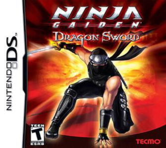
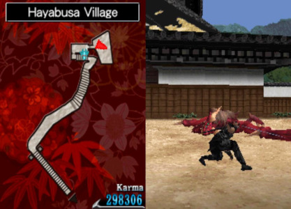

- assets/assets/
Dragon Quest V
  Dragon Quest V é, talvez o jogo que mais tenha marcado minha infância. Na época, eu jogava em espanhol, já que não falava inglês. Foi desse jogo que se originou minha paixão por rpgs de turno.
O jogo começa com você como uma criança num barco, chegando num continente novo com seu pai. Uma parte considerável se passa com você criança ainda, quando você começa a lutar contra os monstros e conhece personagens importantes pra história, como a Bianca, pesonagem qual você pode se casar (eu casei) mais tarde no jogo e o Sabre, o filhote de dentes de sabre seu e de Bianca.
Depois de você perder seu pai quando criança, você é feito de escravo numa prisão por anos, até que quando adulto você consegue escapar para continuar sua aventura. Mais tarde você se casa, tem filhos e acaba sendo o legítimo rei. -
Pokémon Diamond
 Pokémon Diamond foi o primeiro jogo que joguei no meu Nintendo DS. foi o primeiro jogo do pokémon que eu joguei e contribuiu muito para a minha paixão por rpgs de turno. Também foi graças a esse jogo que eu descobri o que era um detonado. Para sanar suas dúvidas, meu inicial escolhido foi o Chinchar!
-
Digimon World
 Mais um RPG de turno né? Parece que meu gosto está ficando bem claro aqui!
Digimon World era mais um jogo qual podemos recrutar os monstros que jogamos. Seu diferencial era poder mandar os digimons para fazendas digitais, onde eles treinavam, brincavam e eram fofos. -
Ninja Gaiden Dragon Sword
 Ninja Gaiden Dragon Sword é diferente de todos os outros jogos dessa lista já que jogamos com o Nintendo DS deitado e controlamos tudo pelo touch screen com ajuda da canetinha do console.
Nesse jogo, nós vamos atrás da amiga ninja dele, que foi capturada e transformada em monstro. No caminho vamos fatiando os monstros e desbloqueando novos poderes e habilidades, com monstros e chefes cada vez mais difíceis.